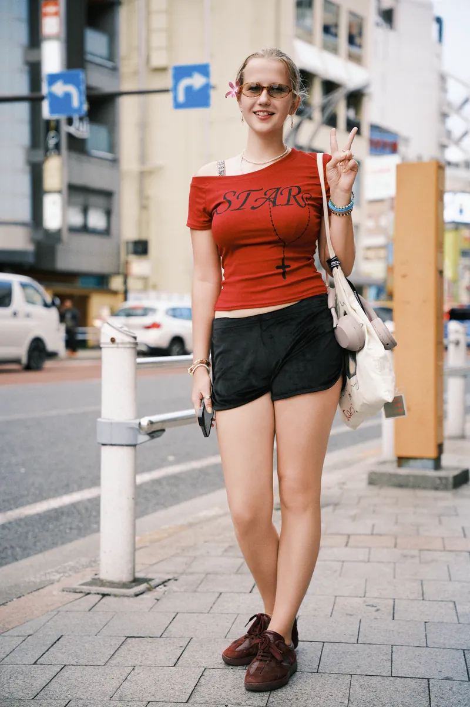

記錄你的日本旅行Your trip to Japan, photographed
我是 Robin，在東京工作的攝影師，拍了十年。我拍的大多是來旅行的人，行程裡只空得出一個下午，也不太知道該從哪裡開始。這完全沒問題，路線我來安排，光線我來看，手該放哪裡我也會告訴你。花幾個小時和我一起在城市裡走走，帶回去的照片會像你真正經歷過的那趟旅行，而不是在地標前擺出來的幾個姿勢。每張精修照片都附上當天全部的原始檔，你拍過的東西，不會留在我的硬碟裡。
I'm Robin, a Tokyo-based photographer with ten years behind the camera. Most of the people I photograph are here on holiday with one afternoon to spare and no real idea where to start, which is fine — I'll plan the route, watch the light, and tell you what to do with your hands. Spend a few hours walking the city with me and go home with pictures that look like the trip you actually had, not a set of poses in front of a landmark. Every edited photo comes with the full set of originals from the day, so nothing you shot stays on my drive.

精選作品Selected Work
全部作品 →All Work →關於攝影師About the Photographer
了解更多 →Learn More →十年的專業拍攝經驗，大部分都在日本。為旅客拍攝旅拍寫真、和服與浴衣寫真，承接團體與旅行團的預約，也為品牌拍攝商業產品照。哪些角落早上八點還很安靜、哪些過了十點就沒救了，我大致都清楚，拍攝的安排是照著這些來，而不是照著一份景點清單走。每次拍攝都有會說英語的助理同行，當天的溝通和安排都更輕鬆；結束後你會拿到一個私人線上相簿，裡面有精修照片，也有當天全部的原始檔。
Ten years of professional work, most of it here in Japan. Travel portraits for visitors, kimono and yukata sessions at the temples, group and tour bookings, and commercial product photography for brands. I know which corners are quiet at eight in the morning and which ones are hopeless after ten, and a session gets planned around that rather than around a list of landmarks. Every shoot comes with an English-speaking assistant, so planning and directing stay easy on the day, and you leave with a private gallery holding the edited photographs and every original frame from the session.
預約拍攝Book a session
把你的日期傳給我，我會告訴你哪些時段還有空。櫻花季和紅葉季這類旺季通常很早就滿了，建議提早詢問。
Send a message with your dates and I'll tell you what's open. Peak seasons like cherry blossom and autumn color tend to go early, so it’s worth asking well ahead.